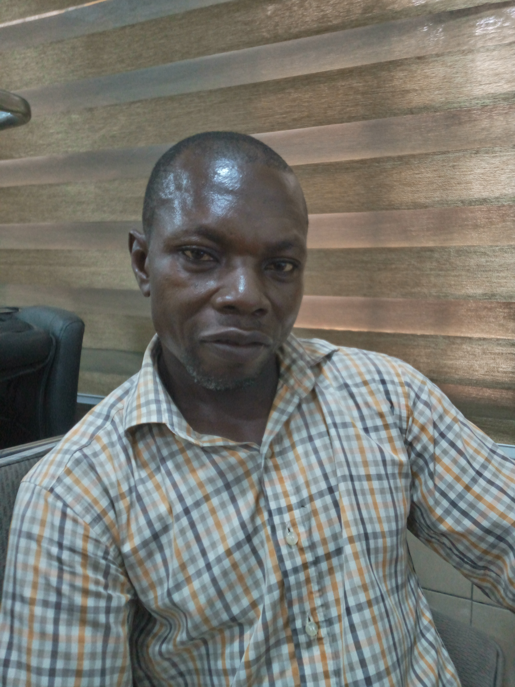

Lucky Ayei Inyang Eni
About Me
Hello! I'm a student at BYU–Pathway Worldwide learning web development. I enjoy coding, design, and creating things for the web!
Goals
My goal is to become a full-stack developer. I want to build useful tools and work on meaningful projects.
Nigeria
Nigeria, located in West Africa, is the most populous country on the continent and one of the largest economies in Africa. It gained independence from British colonial rule on October 1, 1960. Nigeria is known for its diverse cultures, languages, and natural resources, particularly oil.